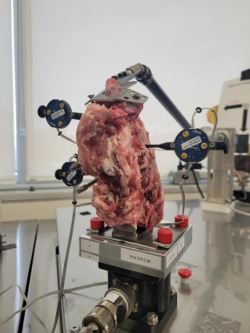
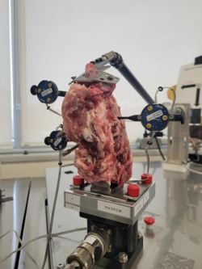

Project Overview
The purpose of this project was to conduct a comprehensive evaluation of the mechanical stability provided by spinal fixation hardware in a porcine cervical spine model. The experiment simulated three clinical conditions: a healthy spine, an injured spine (disc disruption), and a post-fixation spine using pedicle screws and a cross-rod system. The goal was to analyze how spinal motion changes across these conditions under flexion-extension and lateral bending loads.
Outcomes and Contributions
Setup
The specimen was prepared by removing soft tissue while preserving ligamentous structures. Rigid body marker pins were then inserted into three vertebrae to enable motion tracking using an Optotrak motion capture system.
The spine was mounted on a test fixture equipped with a six-axis load cell and actuated by a torsion arm.
 

Data Collection and Analysis
Motion data was collected simultaneously with internal loading data using LabVIEW and NDI First Principles software, synchronized electronically at a 100 Hz sampling rate over a 30-second test duration.
Using MATLAB, a pipeline was implemented to process raw marker coordinates into local vertebral coordinate systems. Transformation matrices were calculated as well as relative rotation angles of the vertebrae under load. This was done for each of the three states—healthy, injured, and fixated—under both flexion-extension and lateral bending.
Two key metrics were extracted from this data:
- Range of Motion (ROM): Maximum angular displacement experienced by the top vertebra relative to the bottom.
- Neutral Zone (NZ): Region around the neutral posture where minimal resistance to motion occurs, often associated with spinal instability.


Results
Hysteresis plots were generated to visualize angular deformation versus applied moment, and bar plots were used to compare NZ and ROM across conditions.
These analyses offered biomechanical insight into how spinal stabilization hardware reduces motion and helps restore structural integrity after injury.
The hysteresis plots for the healthy, injured and fixated case are presented bellow for the flexion and extension case


Testing
Following the manufacturing and post processing, the wrench was tested to validate the FEA results.
During physical testing, the wrench was mounted in the test rig, a steel handle was attached, and weights were incrementally applied using the hanging mass setup. Real-time torque measurements were recorded until failure occurred.
Result: Wrench failed succesfully in the predicted location at 29.7 ft-lb which was just within acceptable range.